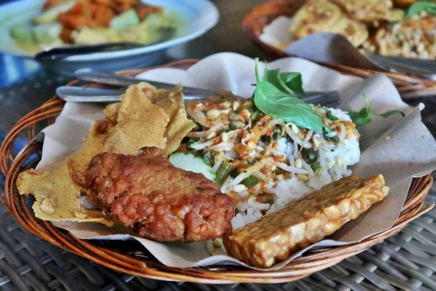

Pecel Original

Pecel original adalah hidangan inti kami: nasi putih hangat dengan sayuran rebus yang disiram sambal pecel kacang tanah. Rasanya gurih, manis, dan pedas, dengan aroma kencur yang menjadi ciri pecel khas Blitar.
Komposisi dasarnya terdiri atas nasi putih, sayuran rebus, dan sambal pecel yang dibuat dari kacang tanah, cabai, gula merah, kencur, bawang putih, daun jeruk, dan garam.
Harga: Rp12.000